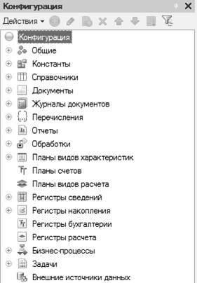
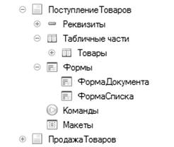
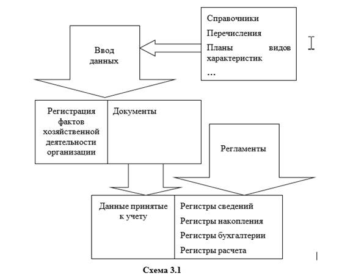

"1С:Предприятие" относится к классу предметно-ориентированных систем (т.е. в данном программном комплексе "поддерживается" понятие объект).
Под объектом упрощенно можно понимать некий "черный ящик", обладающий определенной функциональностью. Он характеризуется каким-либо набором свойств, обладает какими-либо методами, реагирует на определенные события в системе. Методы объекта могут менять его "внутреннее состояние" (значения свойств), могут "заставлять" объект что-либо "делать".
Следует обратить внимание на то, что со словом "объект" в программном комплексе есть несколько понятий: объекты конфигурации (у них нет методов, внутренних состояний), объекты базы данных, системы.
При определении структуры конфигурации разработчик работает с объектами конфигурации, настраивает их свойства. Такие объекты располагаются внутри дерева объектов конфигурации.
Для некоторых из объектов конфигурации можно сказать, что они являются "конструкторами" таблиц информационной базы (в зависимости от состава и значений свойств такого объекта меняется состав полей таблицы базы данных).
Описывая алгоритмы обработки информации, разработчик работает с объектами системы, объектами базы данных (записями таблиц, идентифицирующимися ссылками).
Несмотря на принципиальное отличие между объектами конфигурации и объектами базы данных, объектами системы, взаимосвязь присутствует. Определение какого-либо объекта конфигурации может привести к "появлению" объектов системы, базы данных.
Например, добавление объекта конфигурации "справочник Номенклатура" приводит к тому, что при описании алгоритмов обработки информации можно использовать такие объекты как:
· <СправочникСсылка.Номенклатура>
· <СправочникОбъект.Номенклатура>
· и т.д.
Все объекты конфигурации, которые существуют в системе "1С:Предприятие", образуют несколько основных видов. Каждый вид объектов конфигурации представляет собой как раз те "строительные элементы", из которых будет создаваться конфигурация. Разбивку объектов по видам можно увидеть в дереве конфигурации (они находятся на первом его уровне).

Все объекты конфигурации можно подразделить на три основные группы:
· Общие объекты. Группа вспомогательных объектов конфигурации, с помощью которых осуществляется создание конфигурации, механизмов взаимодействия пользователей с учетными данными.
· Прикладные объекты. Их перечень можно увидеть на первом уровне дерева метаданных (исключая группу "Общие").
· Подчиненные объекты. К таким объектам относятся "Реквизиты", "Табличные части" и т.д.
К объектам данной группы относятся объекты следующих видов:
· Константы. Предназначены для хранения постоянных, условно-постоянных величин.
· Справочники. Списки однородных элементов данных. Используются для хранения нормативно-справочной информации.
· Документы. Служат для ввода информации о совершаемых операциях в системе.
· Журналы документов. Служат для отображения списков документов различного вида.
· Перечисления. Списки значений, задаваемых на этапе конфигурирования.
· Отчеты. Средство получения выходной информации.
· Обработки. Используются для выполнения различных действий над информационной базой.
· Планы счетов. Совокупность синтетических счетов.
· Планы видов характеристик. Предназначены для описания множеств однотипных объектов аналитического учета.
· Планы видов расчета. Предназначены для описания множеств однотипных объектов механизмов расчета.
· Регистры сведений. Служат для хранения информации, состав которой развернут по определенной комбинации значений и, при необходимости, развернут во времени.
· Регистры накопления. Служат для накопления информации в разрезе измерений с возможностью получения остатков или оборотов числовых величин (или остатков и оборотов).
· Регистры расчетов. Служат для накопления информации о периодических расчетах.
· Регистры бухгалтерии. Используются для отражения в бухгалтерском учете информации о хозяйственных операциях.
· Бизнес-процессы. Используются для реализации "процессного" принципа работы. Данный принцип позволяет автоматизировать процесс прохождения и контроля цепочек событий, операций.
· Задачи. Совместно с бизнес-процессами реализуют процессный принцип. Они позволяют вести учет заданий по исполнителям и служат отражением продвижения бизнес-процессов по точкам маршрута
· Внешние источники. Позволяют организовать более удобную работу с внешними источниками данных (в основе лежит механизм ODBC).
В зависимости от вида объекта конфигурации (прикладного или общего) он может иметь различные подчиненные группы объектов.

Приведем перечень подчиненных объектов:
· Реквизиты – дополнительная информация об объекте, доступная только в пределах этого объекта. Можно сказать, что с помощью реквизитов можно определить дополнительные свойства объекта.
· Табличные части – наборы дополнительной информации об объекте, представленные в виде таблиц.
· Реквизиты табличных частей – состав табличной части объекта, доступны только в пределах табличной части объекта.
· Формы – используются для ввода, просмотра и редактирования информации.
· Команды – используются для реализации каких-либо действий, принадлежащих объекту.
· Макеты – предназначены для формирования печатных форм объекта.
· Графы – графы журнала документов.
· Измерения – для регистров это объекты конфигурации, в разрезе которых учитываются данные в регистре.
· Ресурсы – данные, учитываемые в регистре.
В "1С:Предприятие" используется принцип учета "от документа". Т.е. деятельность организации разбивается на элементарные операции. Под каждую операцию создается объект "Документ".

Документами в систему вносится первичная информация о совершенной хозяйственной операции. При заполнении документов используется дополнительная справочная информация. Информация из документов попадает в учетные объекты – регистры. Данные в регистрах могут быть откорректированы различными регламентами (регламентными документами, обработками).
Одним из основных свойств некоторых объектов конфигурации является тип данных. Это свойство определяет, какого рода информацию может содержать объект конфигурации.
Различают три основных группы типов данных:
· Примитивные типы (в их состав входят базовые типы данных).
· Типы данных, зависимые от метаданных, появившиеся после определения в конфигурации объектов конфигурации.
· "Другие" типы, не относящиеся к примитивным и "добавляемым", но поддержка которых во встроенном языке есть изначально.
К примитивным типам данных относятся:
· <Число> (десятичное число)
· <Строка> (строка фиксированной, переменной или неограниченной длины)
· <Дата> (дата, время, дата+время)
· <Булево> (истина или ложь)
· <Тип>
· <Неопределенно>
· <Null>
"Другие" типы, не относящиеся к примитивным и "добавляемым", но поддержка которых во встроенном языке есть изначально, иногда являются коллекциями (их можно "обойти" как по индексу, так и с помощью специального вида цикла "Для Каждого Из"). Часть из этих типов входит в так называемые "Универсальные коллекции значений". Универсальные коллекции значений предназначены для хранения временных наборов данных в течение сеанса работы пользователя. Они не являются объектами информационной базы и служат для вспомогательного сбора, группировки, анализа и обработки информации. Рассмотрим некоторые из них:
Объекты этого типа представляют собой совокупность значений любого типа, в том числе и типа "массив", что, в частности, позволяет организовывать многомерные массивы.
Объект создается из программного кода с использованием конструктора "Новый".
Массив = Новый
Массив(Кол-во элем 1,....N);
Пример кода:
Массив = Новый
Массив;
Массив.Добавить("Первый");
Массив.Добавить(2);
//
так далее
Структура представляет собой динамический набор данных – коллекцию значений, каждый элемент которой состоит из пары "Ключ" и "Значение". Ключи структуры уникальны, и поэтому ими можно идентифицировать значения. Ключ структуры должен быть строковым и отвечать требованиям к именам переменных. К значениям структуры можно обращаться как к свойствам объекта, при этом ключ используется как имя свойства.
СтруктураОтбора
= Новый Структура("Ключи",Значения);
Пример кода:
Отбор = Новый
Структура("Валюта,Контрагент",Валюта,Контрагент);
Допустим другой вариант создания структуры:
СтруктураОтбора = Новый
Структура;
СтруктураОтбора.Вставить("Валюта",Валюта);
СтруктураОтбора.Вставить("Контрагент",Контрагент);
Соответствие представляет собой динамический набор данных – коллекцию значений, каждый элемент которой состоит из пары "Ключ" и "Значение". Ключи соответствия уникальны, и поэтому ими можно идентифицировать значения. В отличие от ключа структуры, ключи соответствия могут быть произвольных типов. Рекомендуется, чтобы в качестве ключа выступало значение неизменяемого типа или другого типа, значение которого может только присваиваться, но не может менять свое содержимое.
Соотв = Новый
Соответствие();
Список значений это объект, позволяющий строить динамические наборы значений и манипулировать ими. Может быть наполнен значениями любых типов. Условно список значений можно представить как таблицу из четырех колонок: пометка, значение, представление, картинка. Каждое из значений характеризуется позицией в списке (индексом).
СПЗ = Новый
СписокЗначений
Таблица значения – объект, позволяющий строить динамические наборы значений и манипулировать ими. Он может быть наполнен значениями различных типов. Может иметь любое количество колонок и быть связанным с элементом "табличное поле".
ТЗ = Новый
ТаблицаЗначений
Пример кода:
ТаблицаЗначений = Новый
ТаблицаЗначений;
ТаблицаЗначений.Колонки.Добавить("Количество",,"Количество
товара");
СтрокаТаблицыЗначений = ТаблицаЗначений.Добавить();
СтрокаТаблицыЗначений.Количество = 11;
Объект, похожий на таблицу значений. Но, в отличие от нее, строки дерева значений могут образовывать иерархические структуры: каждая строка дерева может иметь набор подчиненных строк и т.д.
ДЗ = Новый ДеревоЗначений();
Необходимость наличия встроенного языка определена концепцией настраиваемости системы. Язык является предметно-ориентированным. Он поддерживает специализированные типы данных предметной области, определяемые конфигурацией системы. Работа с этими типами данных в языке организована с использованием объектной техники.
Язык поддерживает конструкции, позволяющие определять переменные, процедуры, функции. Операторы отделяются друг от друга символом ";".
Встроенный язык не чувствителен к регистру, допускается двуязычное описание конструкций (Если, If). Рекомендуется все же писать на языке типовых конфигураций.
Перем
ИмяПеременной;
Процедура
ИмяПроцедуры(ИмяПараметра1, ИмяПараметра2,….)
//
текст комментария
//
тело процедуры
КонецПроцедуры
Функция
ИмяФункции(ИмяПараметра1, ИмяПараметра2,….)
// тело функции
Возврат(ВозвращаемоеЗначение);
КонецФункции
Имя переменной, процедуры, функции может состоять из букв, цифр и символов подчеркивания. Начинаться имя должно либо с буквы, либо с символа подчеркивания.
Порядок описания процедур, функций между собой значения не имеет. Как и в любом другом языке существуют конструкции, реализующие ветвление, циклы:
Если Условие Тогда
// код
ИначеЕсли
Условие Тогда
// код
Иначе
// код
КонецЕсли;
Для
ПеременнаяСчетчик = НачальноЗначение По Конечное Цикл
//
тело цикла
КонецЦикла;
Для Каждого
ПеременнаяЦикла Из ИмяКоллекции Цикл
// тело цикла
КонецЦикла;
Пока
УсловиеЦикла Цикл
// тело цикла
КонецЦикла;
Очень часто (в основном) во встроенном языке придется иметь дело с некими объектными сущностями (с объектами, имеющими набор свойств, методов). Для обращения к свойству объекта можно использовать два подхода:
Наим = Спр.Наименование;
Наим = Спр["Наименование"];
Вызов методов объектов производится "через точку".
Спр.Печать();
Допускаются следующие конструкции:
Док.Контрагент.ПолучитьОбъект().ПечатьКарточкиКлиента();
Платформа "1С:Предприятие 8" сочетает в себе визуальные и языковые средства конфигурирования. Использование встроенного языка в системе имеет событийно-зависимую ориентацию, то есть языковые модули используются в конкретных местах для отработки отдельных алгоритмов, настраиваемых в процессе конфигурации. Программный код всегда помещается в модули.
Место размещения конкретного программного модуля предоставляется конфигуратором в тех точках конфигурации, которые требуют описания специфических алгоритмов функционирования. Эти алгоритмы следует оформлять в виде процедур или функций, которые могут быть вызваны самой системой в заранее предусмотренных ситуациях.